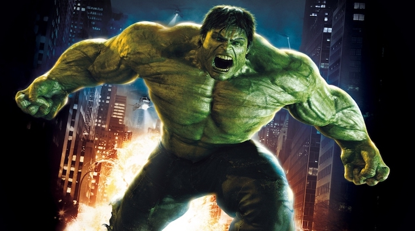

The Incredible Hulk

Bruce Banner, a scientist on the run from the U.S. Government, must find a cure for the monster he turns into whenever he loses his temper.
Storyline
Depicting the events after the Gamma Bomb. 'The Incredible Hulk' tells the story of Dr Bruce Banner, who seeks a cure to his unique condition, which causes him to turn into a giant green monster under emotional stress. Whilst on the run from military which seeks his capture, Banner comes close to a cure. But all is lost when a new creature emerges: The Abomination.Details
Duration: 1h 52minRelease Date: June 13, 2008 (United States)
Genre: Action · Adventure · Sci-Fi
Director: Louis Leterrier
Starring: Edward Norton · Liv Tyler · Tim Roth